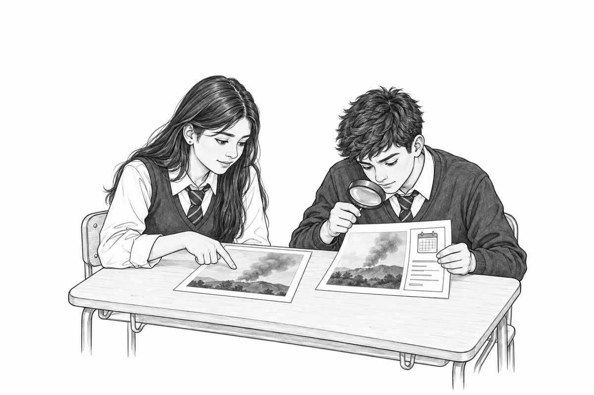

♡ ◯ ↗▱
1.248 Me gusta
chile_en_imagenes_ejercicio Esta foto fue tomada hoy en Chile. Muestra los incendios de febrero de 2024 desde el espacio. Compártanla para que nadie diga que exageramos.
 |
CENTRO EDUCATIVO SALESIANOS TALCA
TÉCNICO PROFESIONAL: 2 SUR 1147 – FONOS (71) 2615416 · 2615410
BÁSICA y LICEO: 11 ORIENTE 1751 – FONOS (71) 2615454 · 2615457 www.salesianostalca.cl – cest@salesianostalca.cl · TALCA - REGIÓN DEL MAULE - CHILE Lengua y Literatura · 3° Medio (NM3) · Prof. Francisco Javier Núñez Valenzuela
|
| Nombre | RUT | |||||
| Profesor | Francisco Javier Núñez Valenzuela | Curso | N° Lista | |||
| Asignatura | Lengua y Literatura | Guía N° | 5 | Revisado | ||
| Semestre | 2 | Fecha | Puntaje | |||
| Objetivo | Verificar afirmaciones sobre casos chilenos, contrastando imágenes, fuentes primarias y fechas, para fundamentar una conclusión responsable. | |||||
| Habilidades | Contrastar fuentes, reconocer recursos del formato, distinguir fechas y fundamentar conclusiones. | |||||
Trabajo individual en papel. Sin celular.

|
CENTRO EDUCATIVO SALESIANOS TALCA
TÉCNICO PROFESIONAL: 2 SUR 1147 – FONOS (71) 2615416 · 2615410
BÁSICA y LICEO: 11 ORIENTE 1751 – FONOS (71) 2615454 · 2615457 www.salesianostalca.cl – cest@salesianostalca.cl · TALCA - REGIÓN DEL MAULE - CHILE Lengua y Literatura · 3° Medio (NM3) · Prof. Francisco Javier Núñez Valenzuela
|
Nombre y apellido: Curso:

1.248 Me gusta
chile_en_imagenes_ejercicio Esta foto fue tomada hoy en Chile. Muestra los incendios de febrero de 2024 desde el espacio. Compártanla para que nadie diga que exageramos.
Busca la imagen en N1 (página 3). Compara la fecha que afirma la cuenta con la fecha en que se tomó la imagen.
|
CENTRO EDUCATIVO SALESIANOS TALCA
TÉCNICO PROFESIONAL: 2 SUR 1147 – FONOS (71) 2615416 · 2615410
BÁSICA y LICEO: 11 ORIENTE 1751 – FONOS (71) 2615454 · 2615457 www.salesianostalca.cl – cest@salesianostalca.cl · TALCA - REGIÓN DEL MAULE - CHILE Lengua y Literatura · 3° Medio (NM3) · Prof. Francisco Javier Núñez Valenzuela
|
Nombre y apellido: Curso:
Recurso: «Fires in Chile» · Incendios en Chile.

Compara la costa, el relieve y las nubes con la imagen de A.
| Publicación del registro | 23 de enero de 2017. Fecha en que NASA publicó el registro. |
|---|---|
| Actualización de la página | 14 de mayo de 2025. Fecha de actualización de la página web. |
N1 · NASA Earthdata, archivo de imagen. Paráfrasis de la fuente oficial, consultada el 6 de octubre de 2026. https://www.earthdata.nasa.gov/news/worldview-image-archive/fires-chile
|
CENTRO EDUCATIVO SALESIANOS TALCA
TÉCNICO PROFESIONAL: 2 SUR 1147 – FONOS (71) 2615416 · 2615410
BÁSICA y LICEO: 11 ORIENTE 1751 – FONOS (71) 2615454 · 2615457 www.salesianostalca.cl – cest@salesianostalca.cl · TALCA - REGIÓN DEL MAULE - CHILE Lengua y Literatura · 3° Medio (NM3) · Prof. Francisco Javier Núñez Valenzuela
|
Nombre y apellido: Curso:
1. Escribe qué lugar y fecha afirma la publicación. Luego explica si los «Me gusta» bastan para creerle.
2. Compara A con N1. Describe dos detalles que se mantienen y una diferencia en las nubes.
3. Compara la fecha que A atribuye a la foto con la fecha en que se tomó según N1. ¿Coinciden? Justifica.
Elige: Se sostiene Se contradice Mezcla aciertos y errores No se puede determinar
Justifica con dos datos de N1. Explica qué cambió en la foto y si su fecha tiene respaldo.
5. Reescribe la publicación con la fecha correcta y el nombre de la fuente.
|
CENTRO EDUCATIVO SALESIANOS TALCA
TÉCNICO PROFESIONAL: 2 SUR 1147 – FONOS (71) 2615416 · 2615410
BÁSICA y LICEO: 11 ORIENTE 1751 – FONOS (71) 2615454 · 2615457 www.salesianostalca.cl – cest@salesianostalca.cl · TALCA - REGIÓN DEL MAULE - CHILE Lengua y Literatura · 3° Medio (NM3) · Prof. Francisco Javier Núñez Valenzuela
|
Nombre y apellido: Curso:
30 de julio de 2025
Contacto del grupo
↪ Reenviado muchas veces
¡Ya está todo cancelado! El SHOA canceló a las 08:50 de hoy la amenaza de tsunami en todas las costas de Chile, después de más de 37 horas de vigilancia. El nombre de la institución y el dato exacto de la hora lo confirman.
Ana: Amén.09:01
Rosa: ¡Qué terrible todo lo que pasó!09:02
Carmen: Menos mal, mi hija está en la playa.09:03
Diego: ¿Esa información de dónde es? ¿Tienes el enlace oficial?09:04
El SHOA estableció la cancelación total de la amenaza de tsunami en todas las costas de Chile a las 08:50 del 31 de julio de 2025, después de más de 37 horas de monitoreo.
El SNAM vigiló boyas y estaciones del nivel del mar y emitió 46 boletines. DIRECTEMAR, de la Armada de Chile, registra el hecho.
directemar.cl
D1 · DIRECTEMAR, registro oficial de 31-07-2025. Paráfrasis de la fuente oficial, consultada el 6 de octubre de 2026. www.directemar.cl/…
|
CENTRO EDUCATIVO SALESIANOS TALCA
TÉCNICO PROFESIONAL: 2 SUR 1147 – FONOS (71) 2615416 · 2615410
BÁSICA y LICEO: 11 ORIENTE 1751 – FONOS (71) 2615454 · 2615457 www.salesianostalca.cl – cest@salesianostalca.cl · TALCA - REGIÓN DEL MAULE - CHILE Lengua y Literatura · 3° Medio (NM3) · Prof. Francisco Javier Núñez Valenzuela
|
Nombre y apellido: Curso:
6. Escribe qué fecha de cancelación afirma A y a qué zonas de Chile dice que afecta.
7. Compara la fecha y hora de la cancelación mencionada en A con las registradas en D1. Escribe qué coincide y qué cambia.
8. ¿El aviso «Reenviado muchas veces» identifica la fuente original? Explica por qué consultarías D1.
Elige: Se sostiene Se contradice Mezcla aciertos y errores No se puede determinar
Justifica con dos datos de D1. Señala qué parte tiene respaldo y cuál no.
10. Responde en dos o tres oraciones: corrige la cadena y cita la fuente.
|
CENTRO EDUCATIVO SALESIANOS TALCA
TÉCNICO PROFESIONAL: 2 SUR 1147 – FONOS (71) 2615416 · 2615410
BÁSICA y LICEO: 11 ORIENTE 1751 – FONOS (71) 2615454 · 2615457 www.salesianostalca.cl – cest@salesianostalca.cl · TALCA - REGIÓN DEL MAULE - CHILE Lengua y Literatura · 3° Medio (NM3) · Prof. Francisco Javier Núñez Valenzuela
|
Nombre y apellido: Curso:
En estas elecciones puedes elegir un solo día para votar: sábado 26 o domingo 27 de octubre de 2024. Se utiliza lápiz pasta azul. Revisa tu mesa y local en consulta.servel.cl.
Mario
Voy a ir el sábado; el domingo estará lleno.
Paula
Entonces, ¿se puede ir a votar los dos días?
René
No vayan a votar, está todo arreglado.
Elena
Voy a ir el domingo antes de las seis, porque tengo cosas que hacer.
Para las Elecciones Regionales y Municipales de octubre de 2024, cada persona puede escoger si vota el sábado 26 o el domingo 27 de octubre.
Se utiliza lápiz pasta azul. Revisa tu mesa y local en consulta.servel.cl.
servel.cl
Responde sobre A y B por separado.
S1 · Servel, proceso municipal y regional de 2024. Paráfrasis de la fuente oficial, consultada el 6 de octubre de 2026. www.servel.cl/…
|
CENTRO EDUCATIVO SALESIANOS TALCA
TÉCNICO PROFESIONAL: 2 SUR 1147 – FONOS (71) 2615416 · 2615410
BÁSICA y LICEO: 11 ORIENTE 1751 – FONOS (71) 2615454 · 2615457 www.salesianostalca.cl – cest@salesianostalca.cl · TALCA - REGIÓN DEL MAULE - CHILE Lengua y Literatura · 3° Medio (NM3) · Prof. Francisco Javier Núñez Valenzuela
|
Nombre y apellido: Curso:
11. Escribe tres datos de A y la evidencia de S1 que respalda o contradice cada uno.
Elige: Se sostiene Se contradice Mezcla aciertos y errores No se puede determinar
Justifica tu decisión con dos datos de S1. Indica a qué elección se refiere.
13. ¿S1 demuestra lo que afirma el comentario B? Explica qué permite concluir y qué información falta.
14. ¿El perfil, el enlace o un verificado bastan para confiar en un mensaje? Indica qué fuente y qué fecha revisarías para otra elección.
|
CENTRO EDUCATIVO SALESIANOS TALCA
TÉCNICO PROFESIONAL: 2 SUR 1147 – FONOS (71) 2615416 · 2615410
BÁSICA y LICEO: 11 ORIENTE 1751 – FONOS (71) 2615454 · 2615457 www.salesianostalca.cl – cest@salesianostalca.cl · TALCA - REGIÓN DEL MAULE - CHILE Lengua y Literatura · 3° Medio (NM3) · Prof. Francisco Javier Núñez Valenzuela
|
Nombre y apellido: Curso:
Comenta la conclusión de cada caso y un dato que la apoye. En el caso 3, distingue A y B.
Respuesta oral. Apóyate en tus respuestas anteriores.
16. Elige dos elementos del formato que generen confianza o urgencia. ¿Demuestran que el mensaje es correcto? Justifica.
17. Escribe tres pasos para verificar una noticia. Indica qué comprobarías en cada uno.
Comentario B
Entonces queda demostrado que todas las próximas elecciones en Chile serán siempre sábado y domingo.